Actual iPhone 17 Pro Simulator captures on m5p, iOS 26.4. These show the current native selection, attachment review, status overview and settings. The terminal output and attachments are disposable test fixtures.
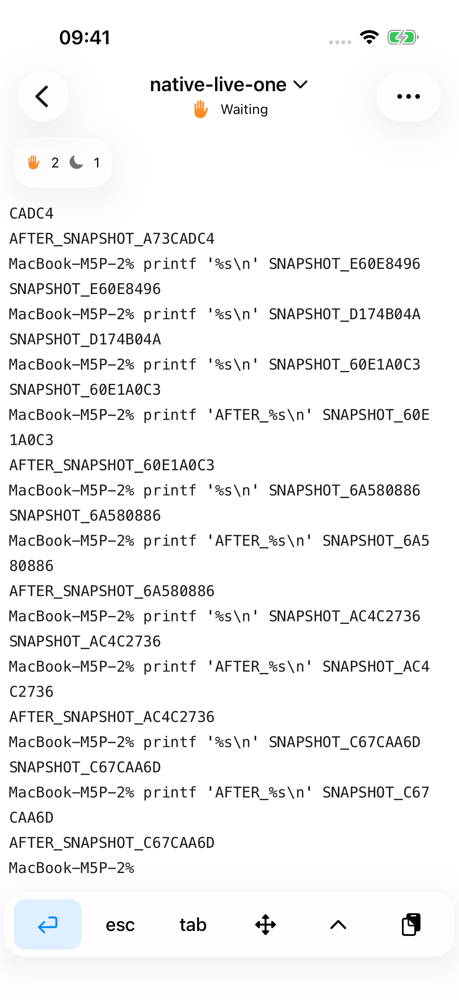
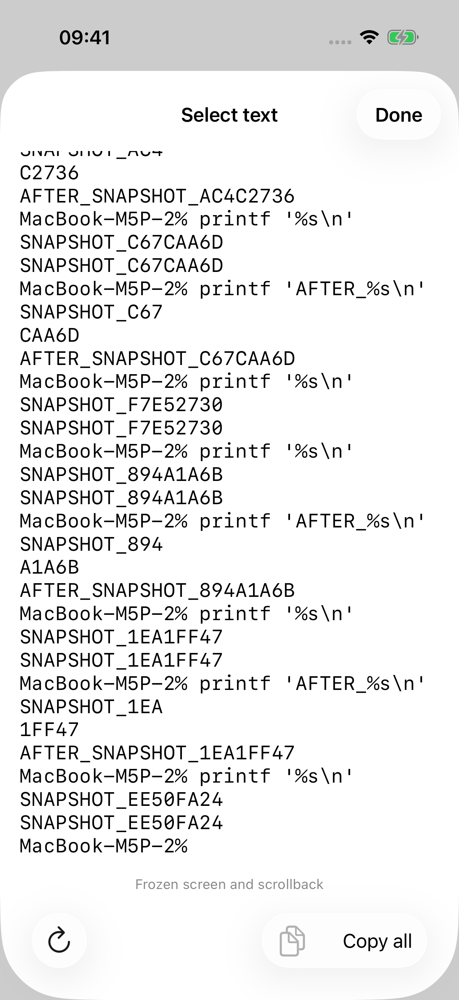
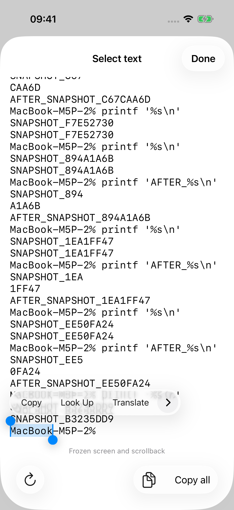
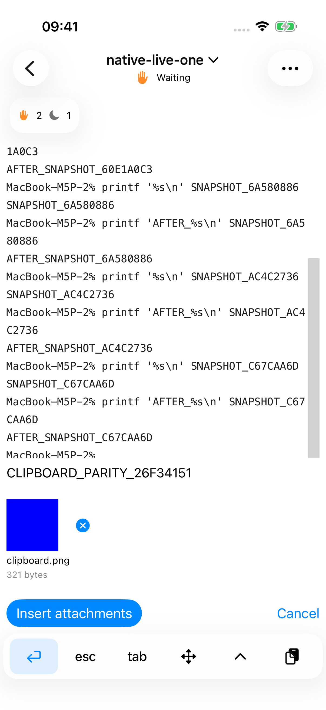
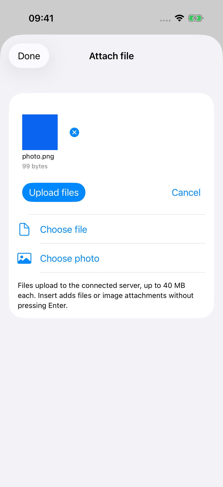
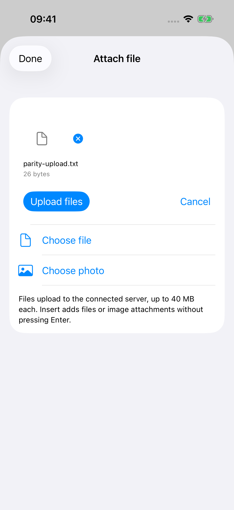
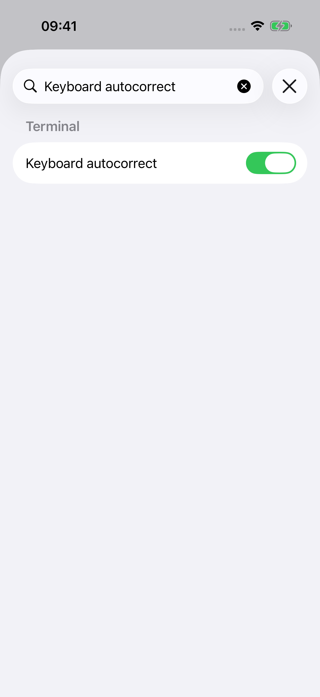
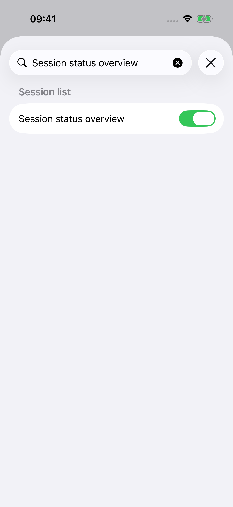
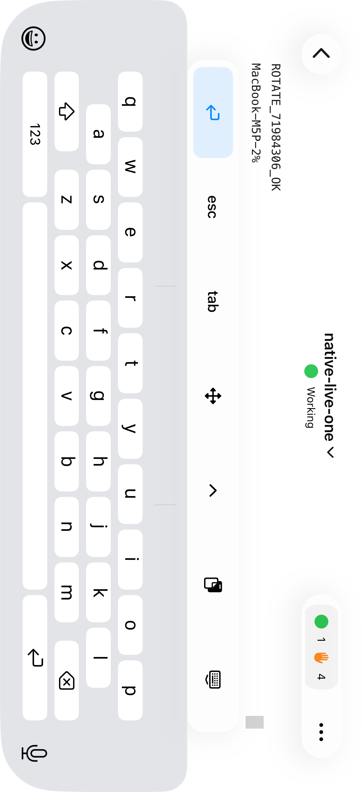
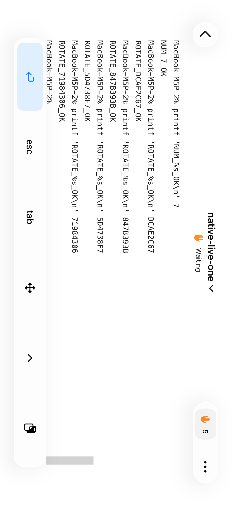
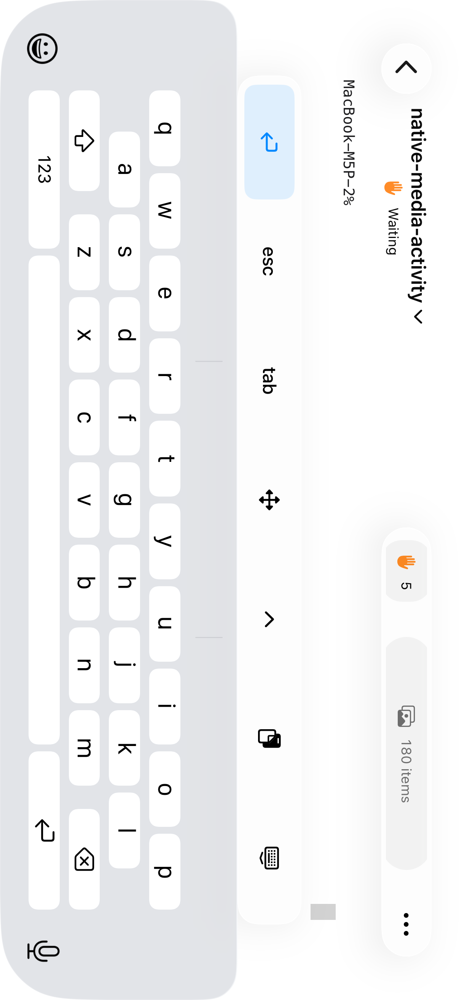
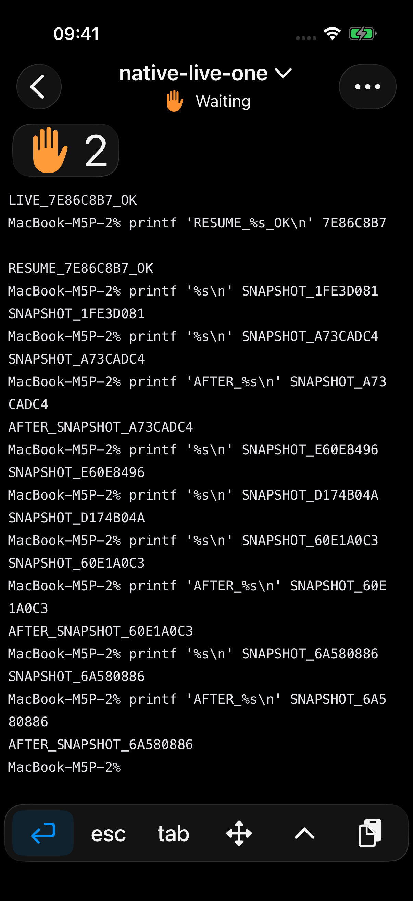
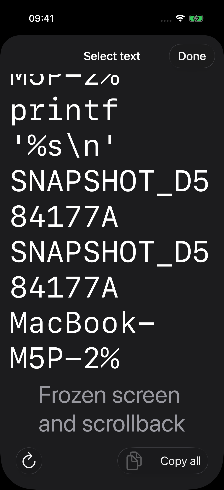
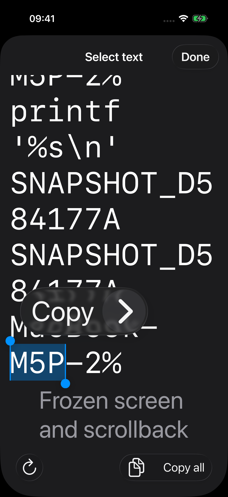
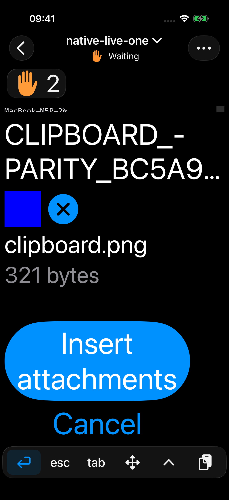
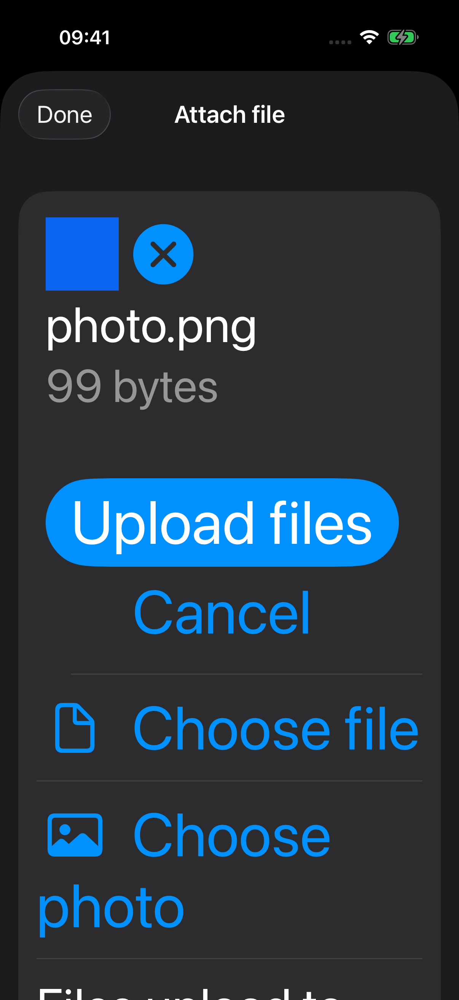
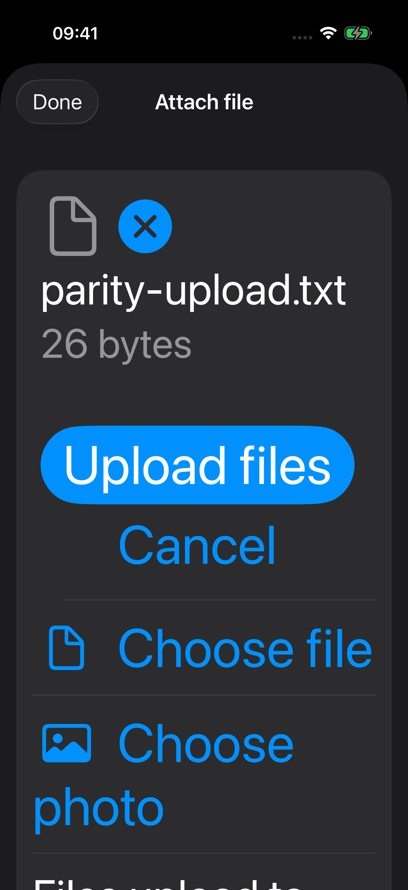
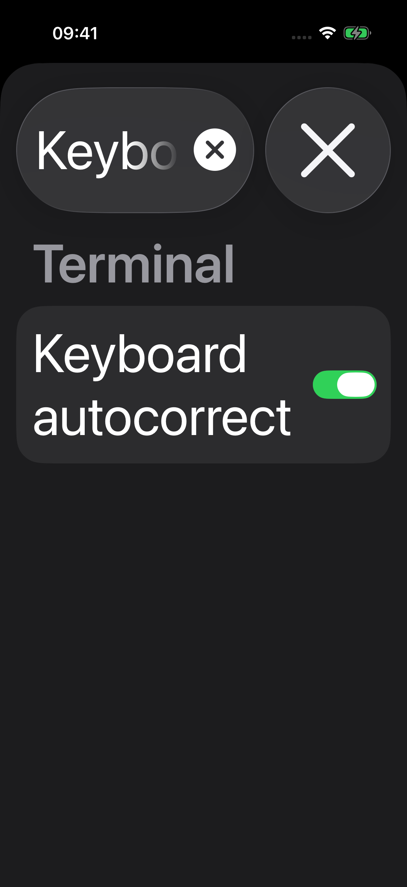
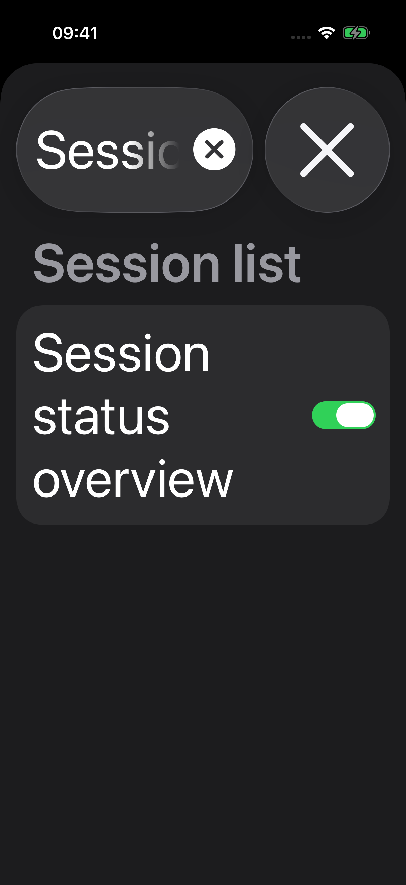
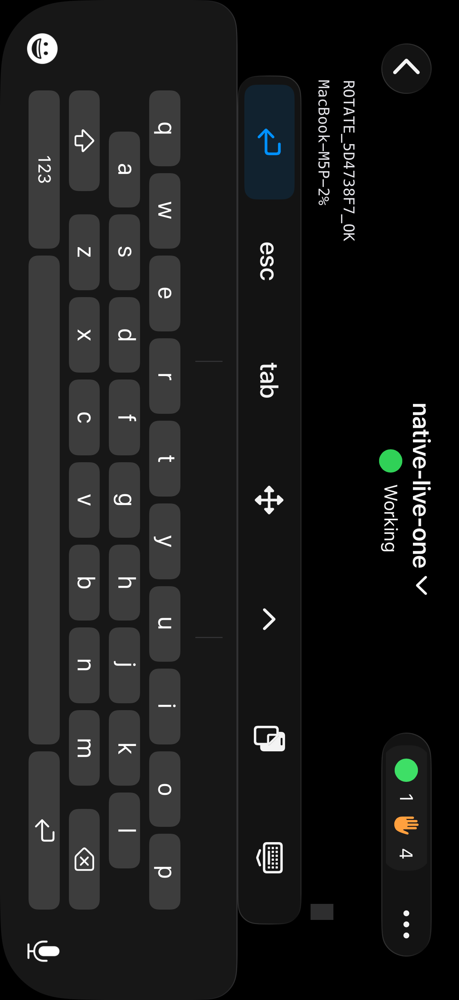
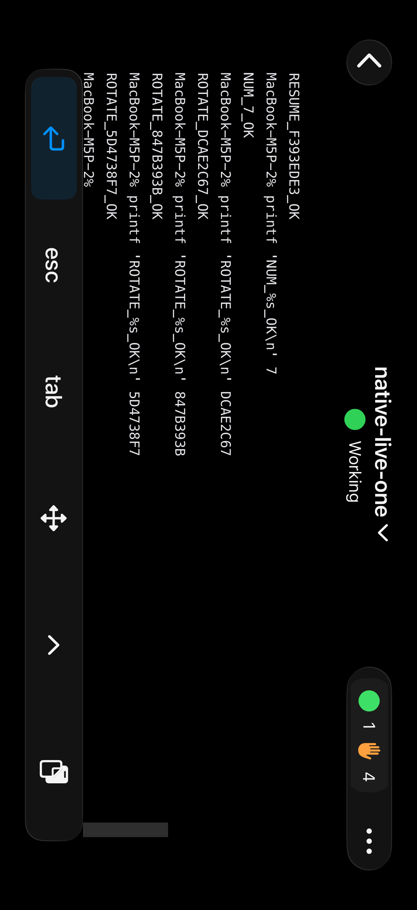
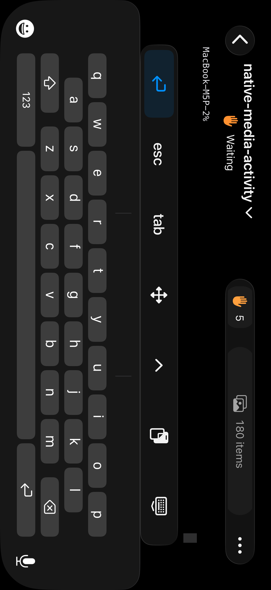